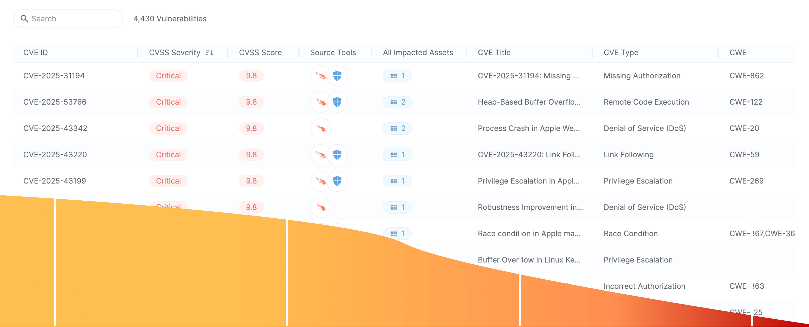
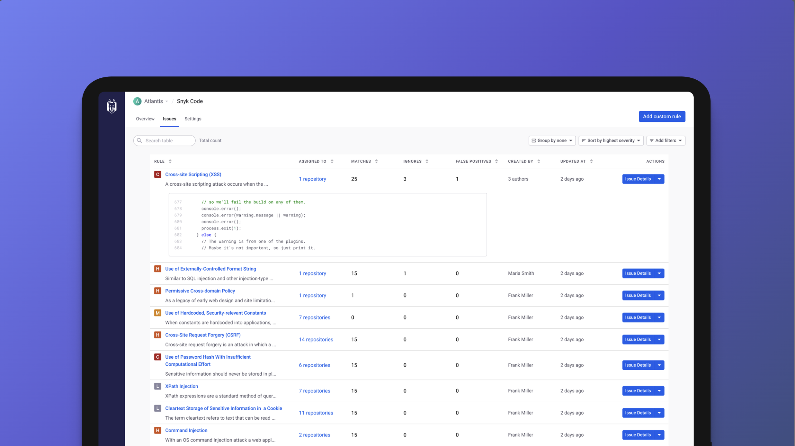
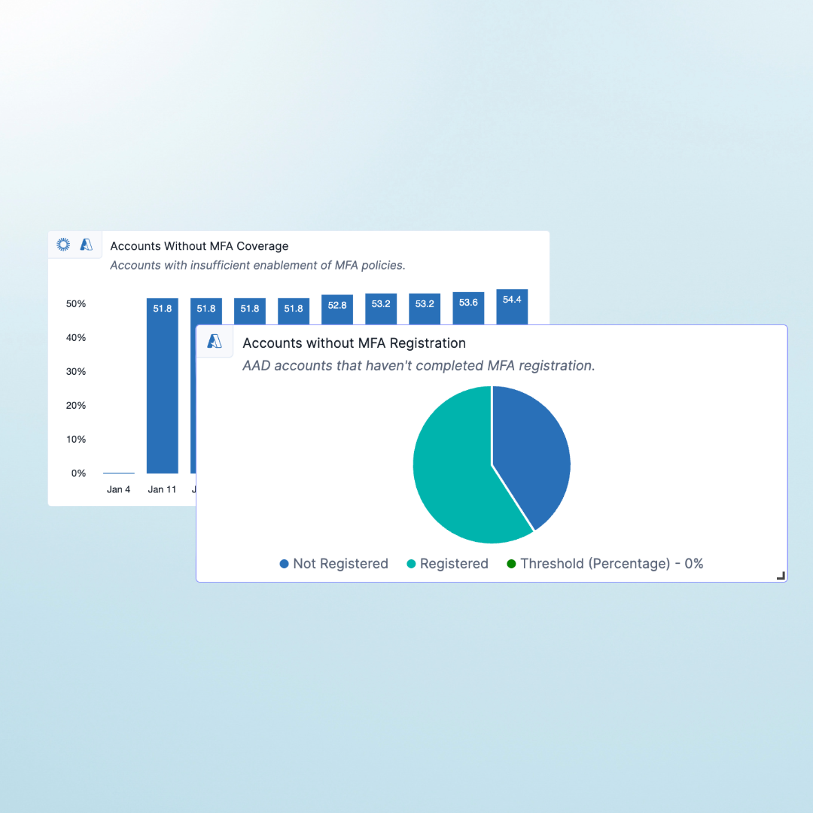
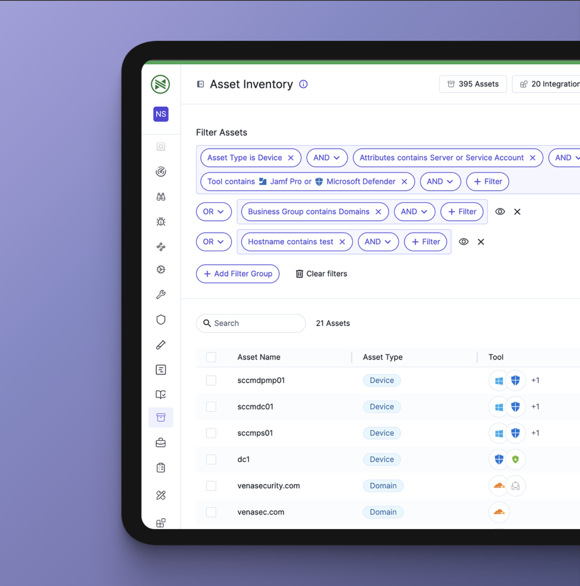

Shlomi Rozilyo
Senior Product Designer·Founding Designer @ Snyk·AI & Vibe Coding
I love turning complex, technical problems into clean designs that just make sense.
I'm a big believer in simplicity, taking dense, data-heavy workflows and shaping them into intuitive interfaces that feel light and easy to navigate.
 AI
AIAI-Driven Design Systems & Automated Prototyping
Bridging the gap between Figma, Notion, and Production Code
AI Agentic Dashboard: From Static Monitoring to State-Driven Remediation
Designing a proactive, autonomous interface for next-gen security operations.

UI/UXNagomi Vulnerabilities: From Data Noise to Risk-Based Action
Consolidating multi-scanner data into a prioritized remediation funnel.

UI/UXSnyk Code: Integrating Static Analysis into the Developer Workflow
Bridging the gap between the DeepCode acquisition and Snyk's core ecosystem.

UI/UXDynamic Metrics & Custom Dashboards
Designing a modular framework for security posture tracking and executive reporting.

UI/UXAdvanced Asset Querying & Filtering
Building a logical, human-friendly interface for complex Boolean operations at scale.
 Research
ResearchResearch Strategy & Operations
Scaling user research and evidence-based decision making at Snyk.

Building This Portfolio with Claude AI
A designer-AI collaboration from Figma to deployment